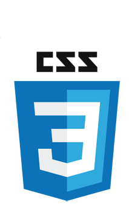
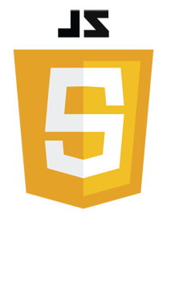

O tema Água Limpa veio da motivação de surgir o entendimento e da necessidade de que a
água é o sustentáculo da vida. Ela não apenas sacia nossa sede, mas também sustenta
ecossistemas, agricultura e indústrias. Exploraremos como a escassez e a poluição hídrica
ameaçam nossa sobrevivência e como cada um de nós pode ser um agente de mudança. Nós
da Água Limpa visamos mostrar a importância de melhorar as águas mais afetadas por poluição, como os rios,
lagos, mares e ate mesmo esgotos. Queremos mostrar a verdadeira situação que por muitos anos vem aumentando o índice de poluição em nossas
águas, noticias se espalham pelo mundo todo, animais morrem todos os dias por conta de
entulhos, descartes incorretos e muita poluição e com isso muitos deles acabam sofrendo e
ficam a beira da extinção.
Objetivo
O objetivo do nosso projeto é informar a situação de distribuição de água por toda Praia
Grande e regiões próximas, para garantir melhor distribuição de água correta para toda
população, contribuir para a saúde e melhorar a qualidade de vida da população e o meio
ambiente.
Ressaltamos a prefeitura e as organizações de criar ou incentivar projetos sociais para que o
objetivo de melhor saneamento básico seja alcançado e recomendamos atividades que
auxiliem a alcançar esse objetivo.
Desenvolvimento do Projeto
O desenvolvimento de um site interativo foi de total foco para exposição de assuntos e notícias relacionadas ao abastecimento de água e da funcionalidade dos esgotos tanto do Brasil quanto das regiões da Baixada, onde durante o Desenvolvimento
do projeto, envolveu a combinação de diversas tecnologias web, como HTML, CSS e JavaScript. Neste trabalho, vamos explorar
como essas linguagens foram utilizadas para criar uma experiência digital envolvente.
Linguagem de Marcação
O HTML é o componente básico da web, que permite inserir o conteúdo e estabelecer a estrutura básica onde da significado e organiza as informações
de uma página na web. Sem isso, o navegador não saberia exibir textos como elementos ou carregar imagens e outros conteúdos.

Linguagem de design gráfico
é usado para estilizar elementos escritos em uma linguagem de marcação como HTML.
O CSS separa o conteúdo da representação visual do site.
Pense na decoração da sua página.

Linguagem de programação
JavaScript é uma linguagem de programação que permite a você implementar itens complexos,
como deixar as páginas Web mais dinâmicas, onde promover conteudos interativos é a sua principal função.
Motivação
Esta exposição é uma convocação à ação e a compreensão profunda do valor da água limpa,
que inspirará a adotar práticas mais sustentáveis e a advogar por políticas que protejam nossos
recursos hídricos precisam garantir que cada pessoa tenha acesso à água potável. Ter uma
visão de futuro para o nosso planeta é algo bem profundo e pessoal, por que é você se
conectar e enxergar o problema causado e se comover e tentar fazer mudança, nem que seja
algo muito simples que nem vai mudar um terço de todo o problema, mas vai ser algo que fez
bem ao planeta, ver que precisamos de mudança, ver que a nossa água está sendo muito
afetada por nós mesmo é algo que você compreendeu e viu que as coisas não podem mais
ficar como estão agora.